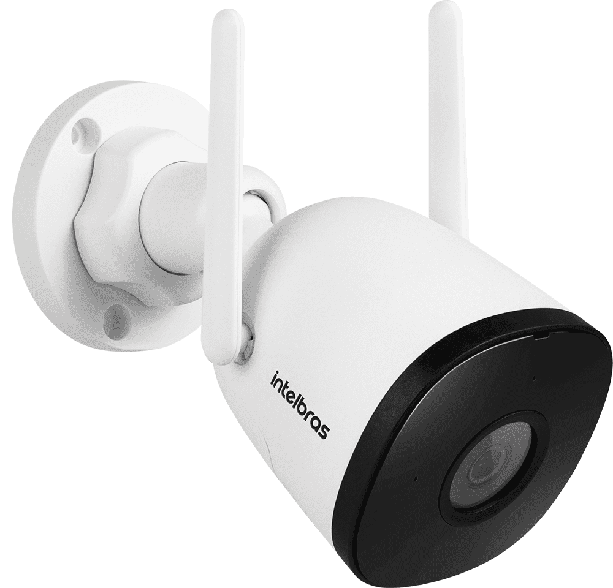
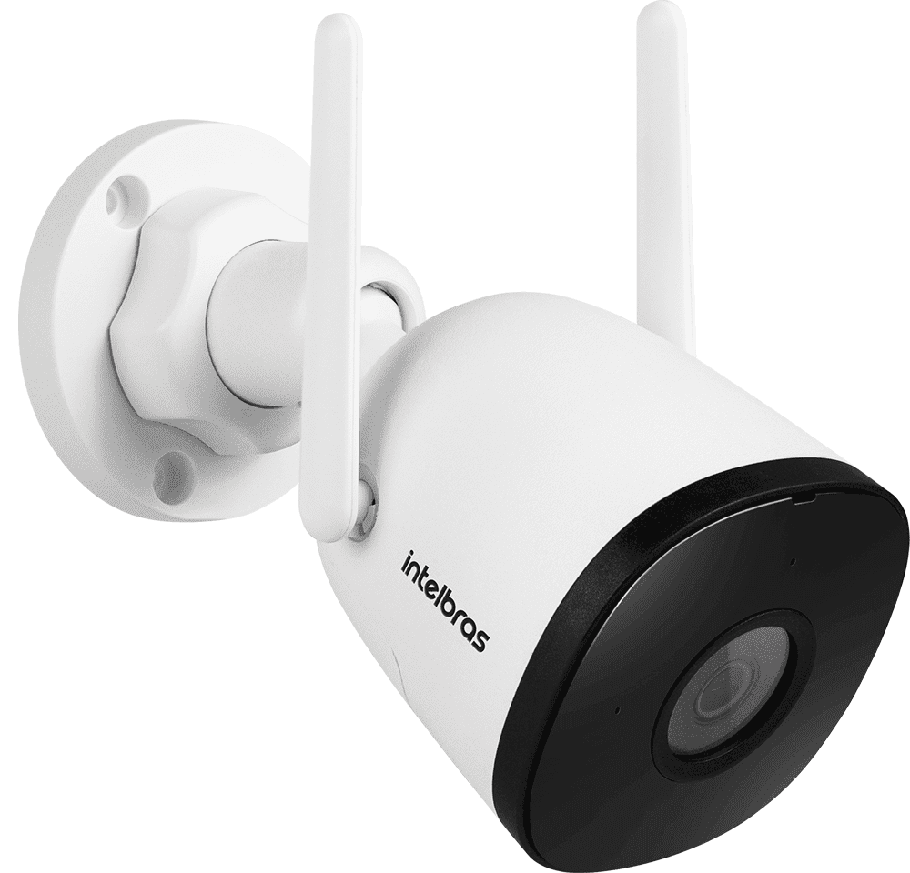
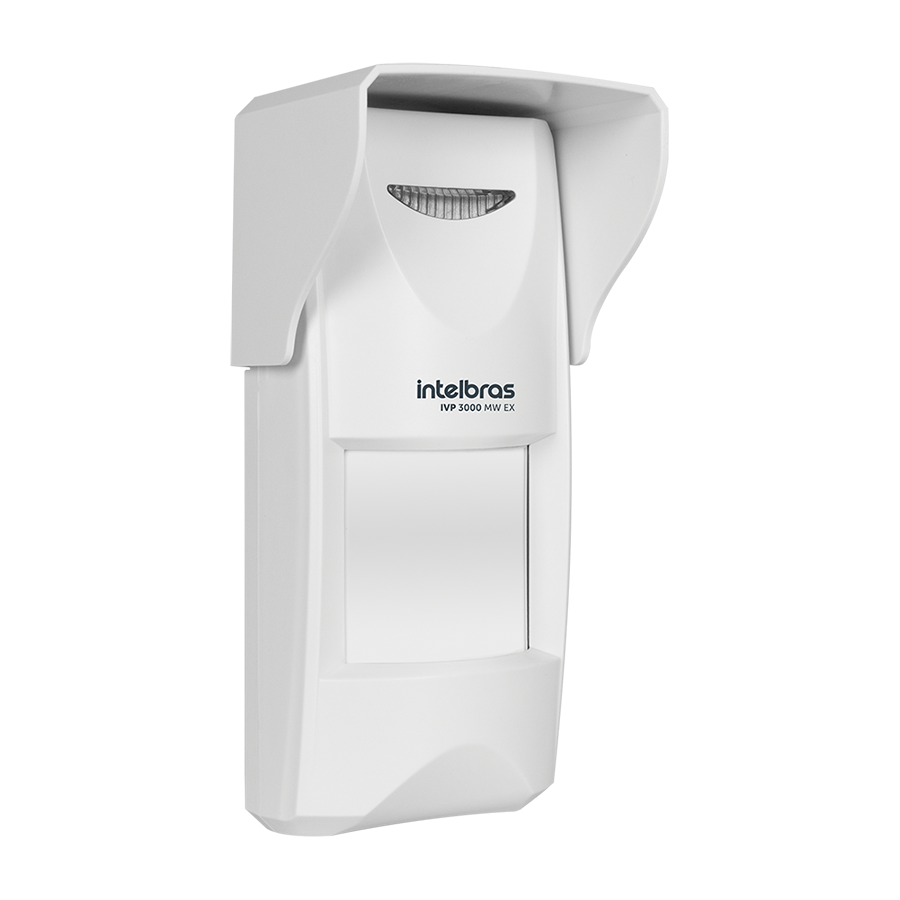
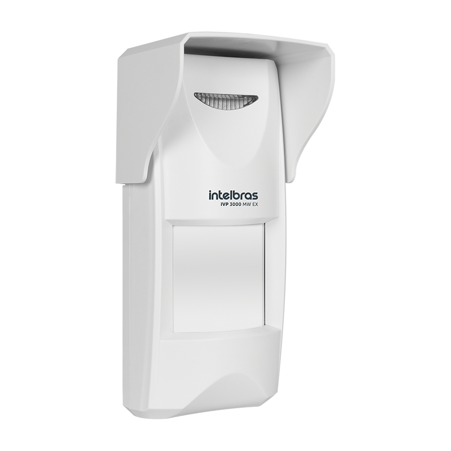

VHL 1220
- A nova linha da marca líder em CFTV reúne alta resolução e nitidez do Full HD com o melhor custo-benefício.
- O iluminador infravermelho, invisível ao olho humano, possibilita um alcance de 20 metros. É ideal para lugares com pouca ou nenhuma luminosidade.
- A câmera possui um circuito adicional de proteção contra surtos de tensão, garantindo a proteção no sinal de vídeo e alimentação, além de conter um case com proteção anti-UV contra o amarelamento dos raios solares.
 

MIBO CAM
- A Mibo é uma linha com equipamentos que podem ser utilizados em ambientes internos e externos. Além da entrada principal, da garagem, do jardim e da área de lazer, a linha Mibo também pode ajudar no monitoramento da sala, da cozinha, do escritório etc. Ela é uma grande aliada na hora de cuidar do quarto do bebê, do seu pet que ficou sozinho em casa ou de pessoas que precisam de cuidados especiais.
- Além das imagens em tempo real, as câmeras de segurança podem gravar. Basta adicionar um cartão de memória de até 128 GB.
AMT 2118 EG
A Central de Alarme Intelbras Monitorada AMT 2118 EG é a mais completa do mercado
IVA 3070X
Os sensores IVA 3070 X formam um perímetro virtual de 2 feixes com até 70 metros de extensão por trecho.
IVP 3000 MW EX
 

Com proteção IP65 e compensação automática de temperatura, este sensor pode ser aplicado em locais onde há mudanças climáticas extremas.
IVP 5002 PET
Detecção mais robusta e sem disparos acidentais, através de duplo PIR e imunidade pet
Eletrificador HIGH POWER ELC 5002
- O modelo HIGH POWER ELC 5002 é o eletrificador ideal para proteção de residências, sua alta energia permite alimentar até 5.000 metros de fio linear.
- Interligando um eletrificador a uma central de alarme, monitore em tempo real o momento em que a cerca foi violada e veja se está armada ou desarmada.
- Através do smartphone, arme e desarme o eletrificador de forma remota e receba status no dispositivo celular quando interligado à central de alarme.
- O Produto ELC 5002 é certificado pela Portaria Inmetro nº 371 de 29/12/2009.
Beneficios
Conexão com alarme para monitoramento
Acesso remoto via aplicativo
Certificação INMETRO
Kit instalado com 4 cameras, 1 dvr de 4 canais com hd de 1TB
Kit instalado com 8 cameras, 1 dvr de 8 canais com hd de 1TB

Kit instalado com 4 sensores (magnéticos ou infravermelho), 1 teclado e 1 central 2118 EG